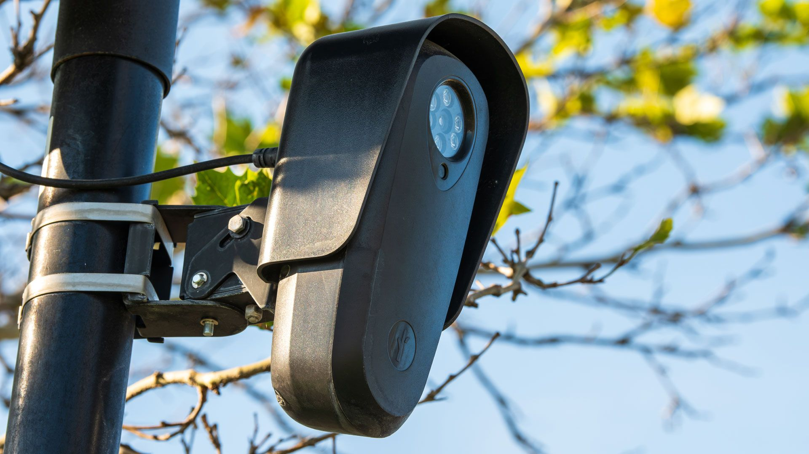

Канадский программист и ютубер Энтони Систилли собрал собственную камеру автоматического распознавания номерных знаков — но настроил её не на граждан, а на полицейские машины. Через две недели после того, как он выложил ролик о работе устройства, к нему в дом в Брэмптоне (провинция Онтарио) пришли два офицера полиции региона Пил и поинтересовались «намерениями проекта». Сам Систилли назвал визит зеркалом тех самых претензий к приватности, которые обычные люди давно предъявляют массовым сетям наблюдения.
Вдохновлением — а точнее антипримером — послужила американская компания Flock Safety. Её централизованная сеть распознавания номеров, по данным самой компании, превысила 120 тысяч камер в 49 штатах и обрабатывает миллиарды сканов машин ежемесячно; любое отделение полиции в сети может искать по всем штатам сразу. Исследователи безопасности позже насчитали в сети 335 701 камеру и опубликовали «карту наблюдения Flock» с их точными адресами, а компанию за это попросили карту удалить. Одна из камер уже поплатилась за доверчивость: по сообщениям, хакеры с извлечённым из устройства ключом шифрования выкачали из неё более 27 тысяч видеороликов и 1,6 миллиона снимков, накопленных за 21 день.
Систилли собрал аналог ALPR-камеры с моделью распознавания, которая срабатывает только на полицейские автомобили, и выложил результаты в TikTok и YouTube (видео «I Investigated Flock Cameras. Then Police Came to My Door», 7 октября). Он же подробно разобрал агрессивные методы продаж Flock муниципалитетам и задокументированные случаи, когда офицеры использовали базу для слежки за бывшими партнёрами. Общественная реакция уже пошла в дело: Лос-Анджелес и Фуллертон приостановили или расторгли контракты с Flock, а жители отдельных городов физически закрывают и ломают камеры.
Отдельного официального анонса у этой истории нет — первоисточник здесь сам Систилли: его канал на YouTube. Полиция Пила публично визит не комментировала, Flock — тоже.
Схожая технология распознавания номеров у нас работает в рамках экспериментального правового режима «Умный город» и системы «Безопасный регион» — но цель у неё прямо противоположная: не граждане следят за полицией, а инфраструктура следит за трафиком и правонарушениями. Симметричного «зеркального» общественного инструмента, который дал бы людям возможность так же массово смотреть, куда ездили служебные машины, в открытых источниках не значится.